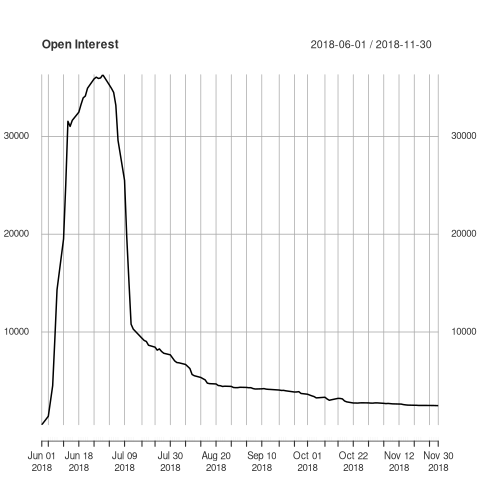

An Introduction to Futures
Table of Contents
1 Futures and Forwards
Futures and forwards are used by firms in the same way in order to manage risk. Futures and forwards simply differ in the manner in which they are traded, and the standardization of the contract.
- In this presentation we'll refer to futures, but much of the content can be generalized to forwards also.
2 Who Trades Futures?
Broadly speaking, there are two types of traders in futures markets, hedgers and speculators.
- Hedgers: Companies who use futures to manage risk. They generally buy futures contract on product they consume, and sell contracts on products they produce.
- Speculators: Individuals and firms who trade futures contracts based on expectations of future prices. This is risk taking behavior.
Types of traders and their aggregate positions are summarized in the [CFTC Commitment of Traders Report](http://www.cftc.gov/Marketreports/CommitmentsofTraders/index.htm).
You can automatically import this data for analysis using:
library(readr) data <- read_csv("https://www.cftc.gov/dea/newcot/c_disagg.txt", col_names = FALSE) print(dim(data)) ## just show first two rows, and first 5 columns data[1:2, 1:5]
| X1 | X2 | X3 | X4 | X5 |
|---|---|---|---|---|
| WHEAT-SRW - CHICAGO BOARD OF TRADE | 200407 | 2020-04-07 | 1602 | CBT |
| BLACK SEA WHEAT FINANCIAL - CHICAGO BOARD OF TRADE | 200407 | 2020-04-07 | 00160F | CBT |
Although we have to add the data headings, which it looks like we can get here.
2.1 Quandl
We can also pull this data via Quandl:
2.1.1 TRANSCO ZONE 6 MONTHLY INDEX (IFED) - Futures and Options - Number of Traders
library(Quandl) api_key <- read.table("~/quandl_api_key") api_key <- as.character(api_key$V1) Quandl.api_key(api_key) cot <- Quandl("CFTC/0233CV_FO_L_ALL_NT") head(cot)
| Date | Total Traders | Non Commercial Longs | Non Commercial Shorts | Non Commercial Spreads | Commercial Longs | Commercial Shorts | Total Reportable Longs | Total Reportable Shorts |
|---|---|---|---|---|---|---|---|---|
| 2020-03-31 | 21 | 1 | 0 | 0 | 11 | 12 | 12 | 12 |
| 2020-03-24 | 20 | 1 | 0 | 0 | 10 | 12 | 11 | 12 |
| 2020-03-03 | 21 | 2 | 0 | 0 | 10 | 10 | 12 | 10 |
| 2020-02-25 | 21 | 2 | 0 | 0 | 10 | 11 | 12 | 11 |
| 2020-02-04 | 20 | 2 | 1 | 1 | 9 | 11 | 11 | 13 |
| 2020-01-28 | 20 | 2 | 1 | 1 | 10 | 11 | 12 | 13 |
3 Hedgers
Say you are a deregulated utility which operates a natural-gas fired power plant. Your business requires you to buy natural gas and sell electricity. The prices of both gas and electricity freely fluctuate.
- In this case your company would be more profitable if the difference between the gas and electricity prices rises, and less profitable if it falls.
4 The Role of Speculators
Speculators play an important role by taking the other side of order imbalances between hedgers. Without speculators, hedgers would have to wait for other hedgers to trade (causing the market maker to widen bid-ask spreads).
Speculators temporarily hold the order imbalance between hedgers in exchange for a return.
Futures markets exist to allow hedging, and not for speculation. That said, without speculators the futures markets would be more likely to fail because transaction costs (bid-ask spread) would increase.
5 Major Futures Markets
- CME Group: Comprises the Chicago Mercantile Exchange, Chicago Board of Trade, New York Mercantile Exchange, COMEX, and the CME Europe.
- Intercontinental Exchange
- Chicago Board Options Exchange
6 Futures Quotes
| Contract Size | 5,000 bushels |
| Price Quotation | Cents per Bushel |
| Minimum Tick | 1/4 of one cent per bushel ($12.50) |
| Settlement | Physical Delivery |
| What can be delivered? | #2 Yellow at contract price, #1 Yellow at a 6 cent/bushel premium, #3 Yellow at a 6 cent/bushel discount |
| Where is it delivered? | Try and find the answer in the Full Contract Specifications |
| Contract Size | 42,000 gallons |
| Price Quotation | Dollars and Cents |
| Minimum Tick | One hundreth of a cent ($4.20) |
| Settlement | Physical Delivery |
| What can be delivered? | Try and find the answer in the Full Contract Specifications |
| Where is it delivered? | Try and find the answer in the Full Contract Specifications |
7 Understanding Futures Prices
All futures prices are affected by interest rates. Beyond that, futures prices are driven by storage costs and convenience yields.
8 Futures Prices by Delivery
9 Open Interest
For convenience sake, we are inexact when we use the term `buy` or `sell` a futures contract. What we mean when we say `buy` (or `sell`) is we enter into contract today to buy (or sell) the underlying at some set point in the future, for the futures price. So when we buy or sell we create a contract, and if we close a position we remove a contract. The number of contracts that are in existence at any point is call open interest.
## Dubai crude oil traded on the Tokyo commodities exchange dc <- Quandl("TOCOM/33X2018") head(dc)
| Date | Open | High | Low | Close | Settle | Volume | Open Interest |
|---|---|---|---|---|---|---|---|
| 2018-11-30 | 46830 | 46830 | 46690 | 46700 | 46700 | 8 | 2471 |
| 2018-11-29 | 47230 | 47230 | 46690 | 46690 | 46690 | 21 | 2476 |
| 2018-11-28 | 46720 | 46970 | 46710 | 46790 | 46790 | 13 | 2483 |
| 2018-11-27 | 46880 | 46890 | 46750 | 46750 | 46750 | 16 | 2485 |
| 2018-11-26 | 47390 | 47390 | 46460 | 46730 | 46730 | 12 | 2489 |
| 2018-11-22 | 47300 | 47350 | 47280 | 47350 | 47350 | 17 | 2492 |
library(xts) oi <- as.xts(dc$`Open Interest`, order.by = as.Date(dc$Date)) plot(oi, main = "Open Interest")
